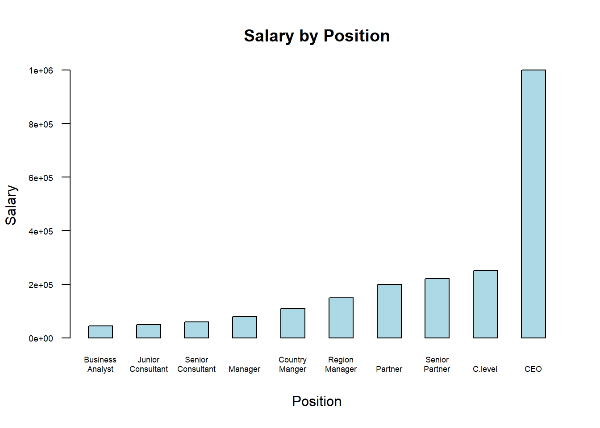

The dataset we selected provides information on salaries across job levels within a company, detailing attributes such as job titles, salary amounts, and associated job levels, ideal for exploring salary trends.
Methods
1. Download and import dataset as a dataframe.
Obtain dataset from Kaggle and import into RStudio environment.
character(0)
character(0)
Rows: 10 Columns: 3
── Column specification ────────────────────────────────────────────────────────
Delimiter: ","
chr (1): Position
dbl (2): Level, Salary
ℹ Use `spec()` to retrieve the full column specification for this data.
ℹ Specify the column types or set `show_col_types = FALSE` to quiet this message.
[1] "Downloaded and imported dataset successfully!"
2. Cleaning
Rename columns; check and remove missing values
library(dplyr) # For data manipulation
Attaching package: 'dplyr'
The following objects are masked from 'package:stats':
filter, lag
The following objects are masked from 'package:base':
intersect, setdiff, setequal, union
library(skimr) # For detailed summary# Standardize column names: make them lowercase, replace spaces with underscores, and remove special characterssalary_df <- salary_df %>%rename_all(~gsub("[[:space:]]+", "_", .) %>%gsub("[^[:alnum:]_]", "", .) %>%tolower())# Handle Missing Data# Check for missing valuesmissing_counts <- salary_df %>%summarise_all(~sum(is.na(.)))print(missing_counts)
# A tibble: 1 × 3
position level salary
<int> <int> <int>
1 0 0 0
3. Manipulation
To create more potential for analysis, be added a column that represents the percentage increase in salary from one level below.
View of the salaries in relation to the job position using a bar plot.
library(ggplot2)salary_df$position <-gsub(" ", "\n", salary_df$position)barplot(salary_df$salary,names.arg = salary_df$position,main ="Salary by Position",xlab ="Position",ylab ="Salary",col ="lightblue",border ="black",las =1, # Keeps y numbers horizontalcex.names =0.55, # Adjust text size for x-axis labelscex.axis =0.6, # Adjust axis number text sizespace =1 )

# Interactive Plotly Bar Chartlibrary(plotly)
Warning: package 'plotly' was built under R version 4.4.2
Attaching package: 'plotly'
The following object is masked from 'package:ggplot2':
last_plot
The following object is masked from 'package:stats':
filter
The following object is masked from 'package:graphics':
layout
# Create a Plotly bar chartplot_ly(salary_df, x =~position, y =~salary, type ='bar', text =~paste("Position:", position, "<br>Salary:", salary),hoverinfo ='text', marker =list(color ='lightblue')) %>%layout(title ="Salary by Position",xaxis =list(title ="Position"),yaxis =list(title ="Salary"))
Regression Analysis of Salaries
We performed a regression analysis to visualize the trend of the salaries as one move across the job levels.
Using the linear regression model, we predicts the compensation of the position above CEO hypothetically:
# Predict salary for level 11level_11 <-11predicted_salary_level_11 <-predict(poly_model, newdata =data.frame(level = level_11))# Print the predicted salaryprint(paste("Predicted Salary for Level", level_11, "is:", round(predicted_salary_level_11, 2)))
[1] "Predicted Salary for Level 11 is: 2941666.67"
Salary Increase in Percentage
The graph of salary increase percent show that when get promoted from level 6 through 9, the bonus that one would receive, as a percent of their salary, is not as much as the lower levels.
It’s clear and easy to see how your salary changes with different positions. As the level increases, so does your salary since the higher levels relate to jobs that are much more complex. The higher level jobs require more work but also give more benefits in return. The only thing is it takes a long time to be able to receive the maximum benefits so it’s important to continue putting out the best work you can to move up the corporate ladder.install.packages(“plotly”)